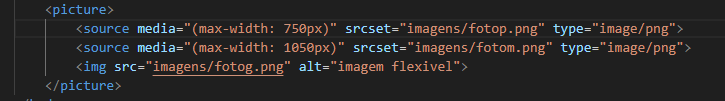
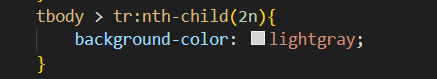

h1 - título. H1 é o título principal. Quando maior o número do 'h', menor será o título. Vai até o 6
p - parágrafo
hr - linha horizontal
br - pula linha. Não use vários br para ter um espaço maior.
< !-- para fazer comentários.
< - para escrever este símbolo, tem que colocar & l t ; (tudo junto)
> - para escrever este símbolo, tem que colocar & g t ; (tudo junto)
® - marca registrada & r e g ; (tudo junto)
© - copyright & c o p y ; (tudo junto)
™ - & t r a d e ; (tudo junto)
€ - euro & e u r o ; (tudo junto)
£ - libra & p o u n d ; (tudo junto)
Δ - delta & D e l t a ; (tudo junto)
↑ - seta para cima & u a r r ; (tudo junto)
EMOJIS - entrar no site emojipedia.org
😎 - basta entrar no site acime copiar e colar o emoji
😎 - outra forma de adicionar é, indo no site, achar o Codepoints do emoji, que neste caso é U+1F60E, pegar e copiar só o que está depois do + (1F60E), e colocar &#x'e o código copiado.
unsplash.com ; pexels.com - Sites para pegar imagens
gimp.org - site para baixar gratuitamente programa que manipula imagens
Tipos de Imagens: jpeg (alta compactação) e png (imagem fica transparente. Não tem alta compactação)
Normalmente em site se usa imagens com no máximo 1500 de largura e 50 de resolução. A maioria usam 650 de largura.
Para redimensionar a imagem no gimp, vá em imagem>redimensionar imagem
Para exportar a imagem vá em Arquivo>Exportar como ... coloque o lugar que quer exportar e coloque a qualidade da imagem (normalmente se usa 70)
Não exporte uma imagem sobre a outra. Tenha sempre a original.
<img src="local da imagem" alt="descrição da imagem"> - adiciona imagem
Caso a imagem nao esteja na mesma pasta do arquivo html, caso esteja numa sub-pasta, o src estará assim: src="nomeDaPasta/nomeDoArquivo"
Também podemos carregar imagens externas. Vá na imagem, aperta com botão direito, 'Copiar Endereço da Imagem' e colar no src=""
Ideal que a imagem seja em ico
iconarchive.com - site para pegar icones de favoritos. Não esquecer de baixar em ico
favicon.cc - site para vc mesmo fazer o ícone.
favicon.io - site transforma texto, imagem ou emoji em ico
link:favicon - irá escrever isso e criar a tag dentro do head, em cima do title. Depois é só colocar o local do arquivo ico em href="" dentro da tag.
b - negrito (não semântica)
strong - negrito/destaque (semântico)
i - itálico (não semântico)
em - itálico/ênfase (semântico)
mark - texto marcado. Para mudar a cor padrão do marcador(amarelo), usar CSS (background color) na tag
big
- texto grande(está obsoleto)small - texto pequeno
del - texto deletado,riscado
ins - texto sublinhado,inserido
sup - texto sobrescrito
sub - texto subscrito
code - deixa como fonte monoespaçada
q - citação("")
blockquote citação completa. Vai aparecer deslocada para direita
abbr - para abreviações. Em title="", colocar o que significa a abreviação.
ol - lista ordenada. Dentro da tag ol, usamos a tag li
ol type="5 opções": - 1:ordenação numérica; A: ordenação alfabética maiúscula; a: ordenação alfabética minúscula; I: ordenação com números romanos maiúsculos; i: ordenação com números romanos minúsculos.
ul - lista não ordenada. Dentro da tag ul, usamos a tag li
ul type="algumas opções" - disc: type padrão (bolinha preta); circle: bolinha aberta; square: quadradinho
É possível misturar os dois tipos de listas
dl - lista de definições. Dentro da tag dl, colocamos a tag dt (termo) e em seguida a tag dd (descrição)
a href="url do site ou nome do arquivo" - O site irá abrir na mesma página
a href="url do site ou nome do arquivo" target="_blank" - O site será aberto em outra página do navegador por causa do target="_blank"
Andando Pelas Pastas - ../ (pasta anterior) ; ./ (mesma pasta)
picture - tag que parece com imagem, mas permite criar várias sorces, ou seja, varias fontes. A imagem vai se adaptando ao tamanho da tela
Coloque a ordem dos tamanos na tag picture
audio src="local do audio" controls
Caso coloque autoplay, o áudio vai começar a tocar assim que a página caregar
Caso coloquei loop, o áudio vai tocar novamente quando acabar.
Compatível com mp3, wav ou ogg.
É possível fazer igual em Imagens Dinâmicas. Usando vários sources
Compativeis com mp4, webm ou ogb
video src="local do video" width="tamanho" poster="local de uma imagem para usar de capa do vídeo" controls
handbrake - aplicativo gratuito pra videos. Neste aplicativo vc consegue mudar o formato do vídeo e a qualidade.
É possível fazer igual em Imagens Dinâmicas e Áudios. Usando vários sources
youtube: vai no vídeo, compartilhar, incorporar, copiar e colar.
Forma ideal de colocar vídeo no site, pois não consome muita banda.
vimeo - outra plataforma que é possivel pegar vídeo
style="" - dentro da tag, entre < >
<style> - tag que fica dentro do head da página html
link rel="" href="nome do arquivo .css" - link que deve ser colocado dentro da tag head
O recomendado é usar o Externo, porém o Inline é o mais forte, depois o Interno e depois o Externo.
Formas de Representar Cores: escrevendo o nome da cor (white), colocando o cógio hexadecimal (#ffffff), rgb (rgb(255, 255, 255)) e hsl (hsl(0, 0%, 100%))


color.adobe.com - site para ver as paletas de cores no circulo cromático
paletton.com - site para ver paletas de cores e ainda monta um exemplo de site
colorzilla - extensão do chrome que pega as cores dos sites
background-image: linear-gradient(90deg,white,blue) - 90deg é o grau que estará o gradiente/degradê. Pode colocar quantas cores quiser
font-family: 'fonte' - para colocar a fonte
font-size: 'tamanho da fonte' - para colocar o tamanho da fonte
MEDIDAS: recomendado usar px (normalmente 16px é o tamanho normal/padrão da fonte) ou em (relativo a letra M maiúscula da fonte). 16px=1em
font-weight: 'peso da fonte' - lighter (mais magro), normal, bold(mais escura), bolder(bem mais escura). Forma de colocar em negrito
Nem toda fonte aceita todos os pesos, mas todas aceitam normal e bold.
Pode usar medidas numéricas: vai de 100 a 900. Mas nem todas as fontes aceitam.
font-style: 'normal ou italic' - para colocar em itálico. Nem toda fonte aceita
text-decoration: underline - sublinhado
text-decoration: none - tira a linha dos links
font: 'font-style' 'font-weight' 'font-size' 'font-family' - forma de colocar tudo numa linha só
google fonts - fontes externas, que não possui no Visual Code
pegar o @import da fonte externa e colar no style, na primeira linha, fora de um seletor
Fonts Ninja - extensão do google para descobrir qual fonte está sendo utilizada em algum site
text-align: 'alinhamento' - left(padrão),center, right, justify
text-indent: 'valor de afastamento do inicio do parágrafo (px)' - o parágrafo irá iniciar mais a frente
'nome da tag' - todos as tag com o mesmo nome sofrerão as mudança.
#'nome do ID' - para selecionar uma ID. Só será formatado quem tem esta ID
.'nome da CLASS - - para selecionar uma CLASS. Só será formatado quem tem esta CLASS
Diferença de ID e CLASS: só usa ID em apenas um elemento, não pode colocar o mesmo ID em vários elementos. Pode ter vários elementos com a mesma CLASS
É possível um elemento ter CLASS e ID, porém o ID vai sobrepor as configurações da CLASS. E a CLASS vai sobrepor as configurações de uma TAG normal.
: - Pseudo-classes. É uma confifuração de estado
'tag,id ou class':hover - é uma Pseudo-classes. Quando passar o mouse por cima, alguma coisa vai acontecer
div > p - vai pegar o p (filho) que está dentro da div (pai)
obs: display: inline-block - coloca tudo numa linha só
obs: display: none - deixa algo oculto
obs: display: block - aparece algo oculto
'tag,id ou class':visited - vai modificar aquilo que já foi visitado. Exemplo: se apertou num link, aquele link (a:visited) irá sofrer a mudança que colocar
:: - Pseudo-Elementos
'tag,id ou class'::after ou before - depois ou antes de tudo ocorrerá algo
Uma caixa pode estar dentro do outro (aninhamento)
height: 'tamanho da altura' - altura
width: 'tamanho da largura' - largura
border-width: 'tamanho da largura da borda';
border-style: solid
border-color: 'cor' - para mudar a cor da borda
border: 'width' 'style' 'color' - forma resumida de colocar todas as outras 3 border acima
padding: 'tamanho' - faz com que a borda se distancie do conteúdo. Seria da borda pra dentro. Fará o padding para todos os lados igualmente.
padding: 'top' rigth' 'bottom' 'left'
padding-top: 'tamanho' - padding para cima
padding-rigth: 'tamanho' - padding para direita
padding-bottom: 'tamanho' - padding para baixo
padding-left: 'tamanho' - padding para esqueda
margin: 'tamanho' - distância entre uma caixa e outra. Seria da borda pra fora. Fará margin para todos os lados.
margin-top: 'tamanho' - margin para cima
margin-rigth: 'tamanho' - margin para direita
margin-bottom: 'tamanho' - margin para baixo
margin-left: 'tamanho' - margin para esquerda
margin: auto - vai centralizar a caixa horizontalmente no meio
obs: margin: auto funciona para caixas, box-level. Caso seja inline-level, usar display: block
outline: - contorno, traçado
outline-width: 'tamanho da largura da borda';
outline-style: dashed - vai deixar pontilhado
outline-color: 'cor' - para mudar a cor do outline
outline: 'width' 'style' 'color' - forma resumida de colocar todas os outras 3 outline acima
box-shadow: 'deslocamento horizontal' 'deslocamento vertical' espalhamento' 'cor da sombra' - para colocar sombra
A sombra não pode ser uma cor sólida. Tem que ser uma cor mais transparente
border-radius: 'tamanho' - para arredondar as vérteces da conta
border-radius: 50% - deixa redondo
border-top-right-radius / border-top-left-radius / border-bottom-right-radius / border-bottom-left-radius
Box-level - uma caixa inserida dentro de outra será inicializada na proxima linha e ocupará a largura inteira da tela.
Ex: div, h1-h6, p, main, header, nav, footer, form, video
Inline-level - uma caixa inserida dentro de outra será inicializada na mesma linha e não ocupará o tamanho até o final, terá o tamanho que precisa.
Ex: span, a, code, small, strong, em, sup, sub, label, button, input, select.
obs: DIV e SPAN tem a mesma função de serem caixas, mas funcionam de formas diferentes.
display: block - vai se transformar numa box-level
display: inline - vai se transformar numa inline-level
div - box-level.
span - inline-level.
header - cabeçalho
nav
- menumain - conteúdo principal
footer - rodapé
article - tag semântica para dizer que é um artigo
section - tag semântica que representa uma seção genérica
https://wireframepro.mockflow.com/ - site para criar estrutura do site, para desenhar o formato do site.
obs: ctrl + shift + p >> Emmet:Envolver com Abreviação vai envelopar o que estiver selecionado com a tag que escrever
:root{
--cor0: #c5ebd6;
--cor1: #83e183ad;
--cor2: #3ddc84;
--cor3: #2fa866;
--cor4: #1a5c37;
--cor5: #063d1e;
} foi criado variaveis de cores
Window Resizer - extensão do Google para ver a o tamanho da página
transition-duration: 'tempo' - tempo de transição
line-height: 'tamanho da linha' - altura entre linhas
Git - gerenciador de versões. Mantem versões do código dentro do próprio computador. (repositório local)
GitHub - é um repositório remoto na qual você coloca seus códigos num site. Ele faz backup do código/arquivo na nuvem. É possivel trabalhar em equipe.
deletar - caso queira deletar o repositório, primeiro delete o repositório local (repository > remove) e depois o remoto. Não exclua a pasta sem antes excluir dos repositórios.
qr-code-generator.com - site que gera um qrcode do seu site para alguém acessar.
background-image: url('local que está a imagem') - Caso a imagem seja menor, ela irá se multiplicar. Caso a imagem seja maior, ela só irá aparecer uma parte na div (a imagem não irá diminuir)
background-size: 'tamanho'px 'tamanho'px - vai deixar a imagem no tamanho que quiser
background-repeat: no-repeat - a imagem não irá repetir. Se colocar repeat-x, vai repetir na horizontal. Se colocar repeat-y, vai repetir na vertical
background-position: left top - é o padrão da posição de ancoragem. Vai mudando a posição e a ancoragem irá mudar.
Caso queira colocar uma imagem pequena no body e em alguma posição basta usar: background-repeat: no-repeat; height: 98vh; background-position: 'posição' 'posição'
obs: mesmo que use uma imagem de fundo, use um background-color de fundo também
background-size: contain; - faz com que a imagem fique 100% do seu tamanho exibida. Mas isso não garante que a página toda estará tendo a imagem no fundo
background-size: cover; - faz a imagem cobrir toda a página, mesmo não mostrando a imagem toda. O fundo vai se adaptando de acordo com o tamanho da página. Caso a página tenha mais conteúdo que faça ser maior que a imagem, ela irá repetir (caso vc mandou repetir) ou irá mostrar a cor de fundo (caso não mandou repetir).
background-attachment: scroll; - é o padrão. O fundo vai rolar junto com o conteúdo.
background-attachment: fixed; - somente o conteúdo vai rolar.
backgroud: 'color' url('image') 'position' 'repeat' 'attachment' - forma rezumida de colocar todos os backgroud. Tem que seguir esta ordem. O size não entra. Tem que colocar separado
position: relative; - o que está fora tem que ser relativo.
position: absolute; - o que está dentro tem que ser absoluto. Assim, terá duas propriedades:
left: 'distância'
top: 'distância'
transform: translate(-50%,-50%); - dentro do translate pode ser positivo e negativo. Ele fará a caixa andar. Usando -50% e colocando 50% no left e top, a caixa ficará fixada no centro da tela
table - tag que delimita a tabela
tr - tag para abrir linha
td - tag para colocar conteúdo na célula
obs: a tabela estará crua. Então deve juntar com CSS. Colocando bordas no td.
border-collapse: collapse; - As bordas irão se juntar. Ideal colocar em table em style.
vertical-align: 'top' ou 'bottom' ou 'middle'; para alinhar o conteúdo da célula verticalmente
TABLE = tabela
TABLE ROWS = linha de tabela
TABLE HEADER = cabeçalho de tabela
TABLE DATA = dado de tabela
ANATOMIA PARA TABELAS GRANDES
TABLE
CAPTION = legenda da tabela
THEAD = cabeçalho
TR,TD,TH
TBODY
TR,TD,TH
TFOOT = rodapé
TR,TD,TH
th - tag que representa um tópico. Normalmente usado no thead e tfoot. Já vem padrão em negrito e centralizado
caption - legenda que fica acima da tabela. Deve colocar togo quando abre a tag table.
th - tag que representa um tópico. Normalmente usado no thead e tfoot. Já vem padrão em negrito e centralizado. Não é um dado. É um título.
scope="col" - vai dizer semanticamente que o th terá seus dado em coluna. Não causa resultado visual, apenas semântico
scope="row" - vai dizer semanticamente que o th terá seus dado em linha. Não causa resultado visual, apenas semântico
scope="colgroup" - vai dizer semanticamente que o th terá seus dado em várias colunas. Não causa resultado visual, apenas semântico
scope="row" - vai dizer semanticamente que o th terá seus dado em várias linhas. Não causa resultado visual, apenas semântico
obs: usando scoop em th, você poderá o width da linha ou coluna de referencia usando style inline
Uma linha de cada cor. Ideal para tabelas grandes. Não precisa ficar restrito apenas a cor. Pode fazer outras alterações no efeito zebrado.
:nth-child(2n) - Pseudo-classes que faz o efeito. Caso queira trocar o 2n. Pode trocar por odd ou 2n-1 (impares) ou even ou 2n (pares)

Não funciona em todos os navegadores. O cabeçalho fica colado na parte de cima da tela quando existir rolagem
colspan="numero" - vai expandir a célula na quantidade que colocar. A expansão será de colunas
rowspan="numero" - expansão da célula em linha
colgroup - tag que colocará logo após abrir a tag table. Dentro dela, você abrirá a tag col o número de colunas que tem sua tabela. Depois criará uma class ou id para cada col e colocará no style para fazer o destaque.
Caso a tabela tenha 4 colunas, mas você quer colocar duas colunas coladas com mesmo destaque, você pode colocar mesma class ou pode colocar 3 col e em uma delas colocar spam="2"
Selecione a tabela inteira e envelope com div. Nesta div, crie uma id e em style coloque: overflow-x:"auto"(só rolagem vertical) ou overflow-y:"auto"(só rolagem horizontal)
É um display inline
iframe src="endereço do site" frameborder="0" - frameborder="0" significa que não terá uma borda
Existem alguns sites que não permitem usa-los como iframe.
Como nem todo site funciona com iframe, é interessante usar a dentro da tag iframe para caso o site não aceitar, ter o link.
Tamanho Padrão: 300x150
scolling="auto" - é o padrão. Se o conteúdo exceder o tamanho do frame, vai criar a barra de rolagem
scolling="yes" - mesmo que o conteúdo estivesse cabendo todo dentro do iframe, iria aparecer a barra de rolagem.
scolling="não" - em alguns navegadores não irão permitir a rolagem
frameborder="1" - o iframe terá borda
Ideal é usar sites próprio.
É possível usar links (a) que irão aparecer no iframe. Para isso, no iframe deve-se colocar name="algum nome". E em a deve-se colocar target="o nome que colocou no iframe". Assim, quando apertar no link, a página será aperta no iframe.
Caso queira deixar o iframe com uma mensagem inicial ou uma imagem, você deve tirar o src e colocar srcdoc="". Dentro deste srcdoc você pode colocar html.
sandbox="sanbox" - bloqueia todo e qualquer acesso de outros sites que estejam dentro do iframe tentem fazer. Usado para dar mais segurança contra ataques.
sandbox="allow-same-origin" - vai permitir conteúdo de mesma origem
referrerpolicy="no-referer" - também trará mais segurança. Significa que o que está carregado dentro do iframe não vai coletar nenhum tipo de informação do usuário
É possível usar Mapas do Google e do Waze com iframe. Também é possível usar Documentos do Google Docs
form - tag semântica para dizer que está num formulário
autocomplete="off" - coloca dentro do form para que os campos do formulário não recomendem o que já foi escrito
action="cadastro.php" - ação que será disparada quando apertar o submit. Este action coloca dentro da tag form
method="" - coloca dentro da tag form. Dentro é possível colcoar get ou post. O padrão é GET (coloca na URL os dados for colocado no formulário). O POST não coloca na URL os dados. Isso não significa que o POST protege os dados.
input:text - cria um campo para escrever
input:submit - cria um botão
input:password - campo para colocar senha. Vai ser preenchido com *
input:reset - cria um botão que limpa todos os campos
input:number - cria um campo que só aceita números
step="numero" - é o valor que vai mudando a cada vez que aperta a setinha do input
min="numero" - número mínimo aceito no input
max="numero" - número máximo aceito no input
input:month - cria um campo com os meses do ano
input:date - cria um campo com os dias do ano
input:time - cria um campo com a hora
required - deixará o input como obrigatório. Coloca dentro do input
minlength = "número" - input terá comprimento mínimo de tanto. Coloca dentro do input
maxlength = "número" - input terá comprimento máximo de tanto. Coloca dentro do input
size="número" - é o tamanho do campo. Se colocar 10, o campo terá tamanho para colocar 10 'letras'. Mas isso não impede de colcocar mais, porém só vai mostrar 10. Coloca no input
placeholder="nome do usuário" - deixa algo escrito dentro do input, como se estivesse preenchido (é como se fosse uma dica). Porém não está preenchido. Coloca dentro do input.
label for="" - no for, coloca o mesmo nome que estiver no id do input que estará relacionado